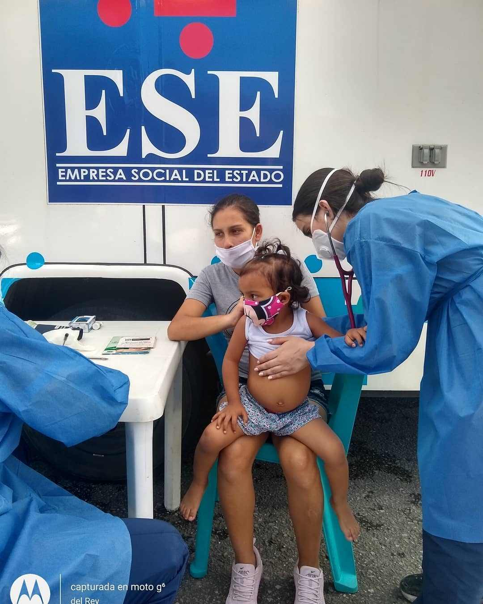

NOAH

.jpeg)
 FUNDACIÓN NOAH-H
La FUNDACIÓN NOAH-H tiene como objeto ayudar a la Transformación de
vidas de las personas mas necesitadas, desde todas las dimensiones del
ser; con un enfoque inclusivo y orientado por un equipo interdisciplinario
con alta idoneidad, con una visión saludable, educativa, social y ambiental
de impacto intersectorial. Buscando la protección integral y Fomentando la
corresponsabilidad de las familias como núcleo fundamental, la escuela
como entorno protector y del contexto como comunidad afectiva y
formadora. Y de la mano de la responsabilidad social de las personas
naturales, empresas y alianzas público privadas.
FUNDACIÓN NOAH-H
La FUNDACIÓN NOAH-H tiene como objeto ayudar a la Transformación de
vidas de las personas mas necesitadas, desde todas las dimensiones del
ser; con un enfoque inclusivo y orientado por un equipo interdisciplinario
con alta idoneidad, con una visión saludable, educativa, social y ambiental
de impacto intersectorial. Buscando la protección integral y Fomentando la
corresponsabilidad de las familias como núcleo fundamental, la escuela
como entorno protector y del contexto como comunidad afectiva y
formadora. Y de la mano de la responsabilidad social de las personas
naturales, empresas y alianzas público privadas.
Factura